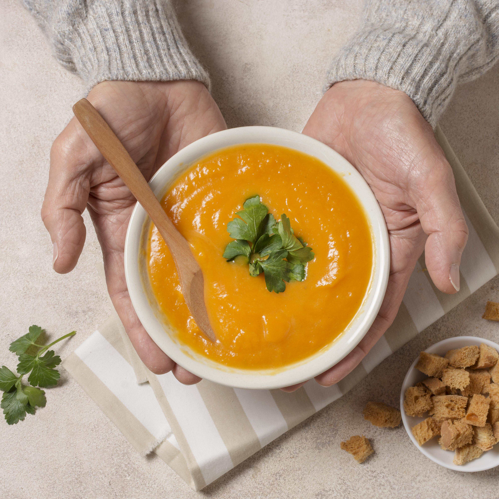

Home
Vegan Carrot Curry Soup

Description
A warm, comforting vegan soup, with hints of curry
Ingredients
- 4 Cups Vegetable Broth
- 2 tsp curry powder
- 1 tsp ground cumin
- 1/2 tsp ground cinnamon
- 1/2 tsp gound ginger
- 2 lbs carrots, peeled and chopped
- 1 (14 oz) can coconut milk
- 14 ounces water
- 1 tsp chopped fresh cilantro (Optional)
Steps
- Pour the vegetable broth into a soup pot, and bring to a boil over medium heat.
Stir in the curry powder, cumin, cinnamon, and ginger; add the carrots.
Reduce heat to a simmer, and cook until the carrots are tender, about 20 minutes, stirring often.
- Strain out the carrots from the broth, and place carrots into a blender,
filling the pitcher no more than halfway full.
Pour about 1/4 cup vegetable broth into the blender to allow the carrots to puree.
Hold down the lid of the blender with a folded kitchen towel,
and carefully start the blender, using a few quick pulses to get the carrots moving before leaving it on to puree.
Puree in batches until smooth, if needed; return the pureed carrots to the vegetable broth.
Alternately, you can use a stick blender and puree the carrots right in the cooking pot.
- Stir in the coconut milk and the water (use the coconut milk can to measure). Bring back to a simmer; sprinkle with cilantro to serve.